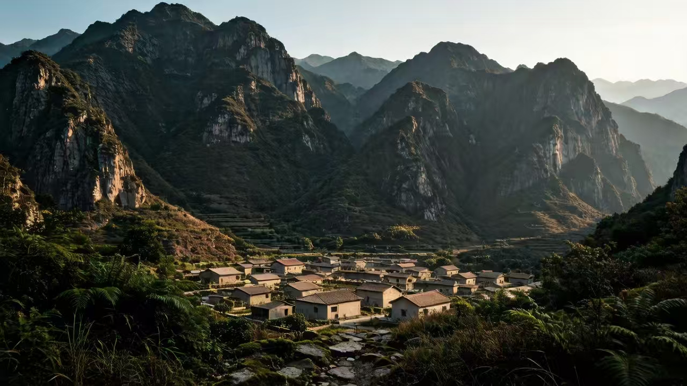

永淮村是一座由神明庇佑的村庄。
永淮村位于永益山正北方向，位置偏僻因此发展较为落后。后被凤卯市郑祁安市长发掘，正处于缓慢发展阶段。虽四面环山，但村庄严重缺水干旱，因此郑祁安市长为村庄找来一位神明，保佑村庄风调雨顺。自此，村庄逐渐因为这位神明开始好转，每祭拜一次，神明便会为永淮村降雨，十分灵验。
若有人前往永淮村，村长或村民要将其带到神明面前，避免其做错事、说错话惹神明不满。
游客需谨记一点：可以不祭拜，但不能不尊重。此行为会干扰神明的神力。
你会成为永淮村的罪人。